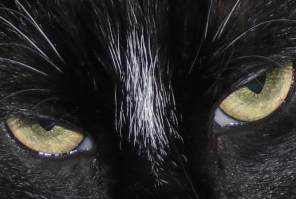

Introduction
PhotoFilmStrip creates movies out of your pictures in just 3 steps. First select your photos, customize the motion path and render the video. There are several output possibilities for VCD, SVCD, DVD up to FULL-HD.
The effect of the slideshow is known as "Ken Burns". Comments of the pictures are generated into a subtitle file. Furthermore an audio file can be specified to setup the background musice for the slide show.
In contrary to other projects i know so far, PhotoFilmStrip has the opportunity to render slide show in Full-HD (1920x1080) resolution.
News
2009/09/22
New Website!
2009/09/18
Version 1.2 of PhotoFilmStrip has been released!